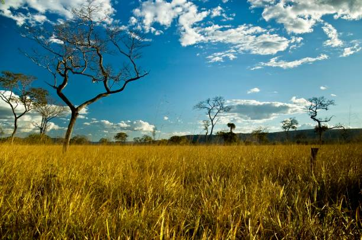

O cerrado é uma das principais formações vegetais do Brasil, abrangendo uma área de cerca de 2 milhões de km². Ele se estende pelos estados do Mato Grosso, Mato Grosso do Sul, Tocantins, Goiás, Minas Gerais, Bahia, Maranhão, Piauí, São Paulo, Paraná e Distrito Federal. Apesar de sua importância ecológica, o cerrado vem sendo bastante ameaçado por atividades humanas como o desmatamento e a expansão da agricultura e pecuária
O cerrado é uma formação vegetal bastante diversa, abrigando uma grande variedade de espécies de plantas e animais. Ele é composto por savanas arborizadas, cerradões e matas ciliares, entre outros tipos de vegetação. Entre as espécies típicas do cerrado, destacam-se o ipê, o buriti, o jatobá e o pequi, além de várias espécies de animais, como o lobo-guará, o tamanduá-bandeira e o tucano.

O cerrado é um importante centro de biodiversidade do planeta, abrigando muitas espécies endêmicas, ou seja, que só são encontradas nessa região. Além disso, ele desempenha um papel fundamental na regulação do clima, na manutenção dos recursos hídricos e na proteção do solo contra a erosão. O cerrado também é fonte de recursos naturais importantes para a economia brasileira, como o nióbio, o ferro, o alumínio e o ouro.
Apesar de sua importância, o cerrado vem sendo ameaçado por diversas atividades humanas. A expansão da agricultura e da pecuária tem levado ao desmatamento de grandes áreas de cerrado, causando perda de biodiversidade e impactos negativos na qualidade do solo e dos recursos hídricos. Além disso, o uso indiscriminado de agrotóxicos e fertilizantes tem contribuído para a contaminação dos solos e das águas da região.

Para proteger o cerrado e garantir a sua sustentabilidade, são necessárias políticas públicas que incentivem a preservação da vegetação nativa, a restauração de áreas degradadas e a adoção de práticas agrícolas sustentáveis. Além disso, é preciso conscientizar a sociedade sobre a importância do cerrado e da sua preservação, buscando formas de conciliar o desenvolvimento econômico com a conservação da biodiversidade e dos serviços ecossistêmicos que o cerrado oferece.